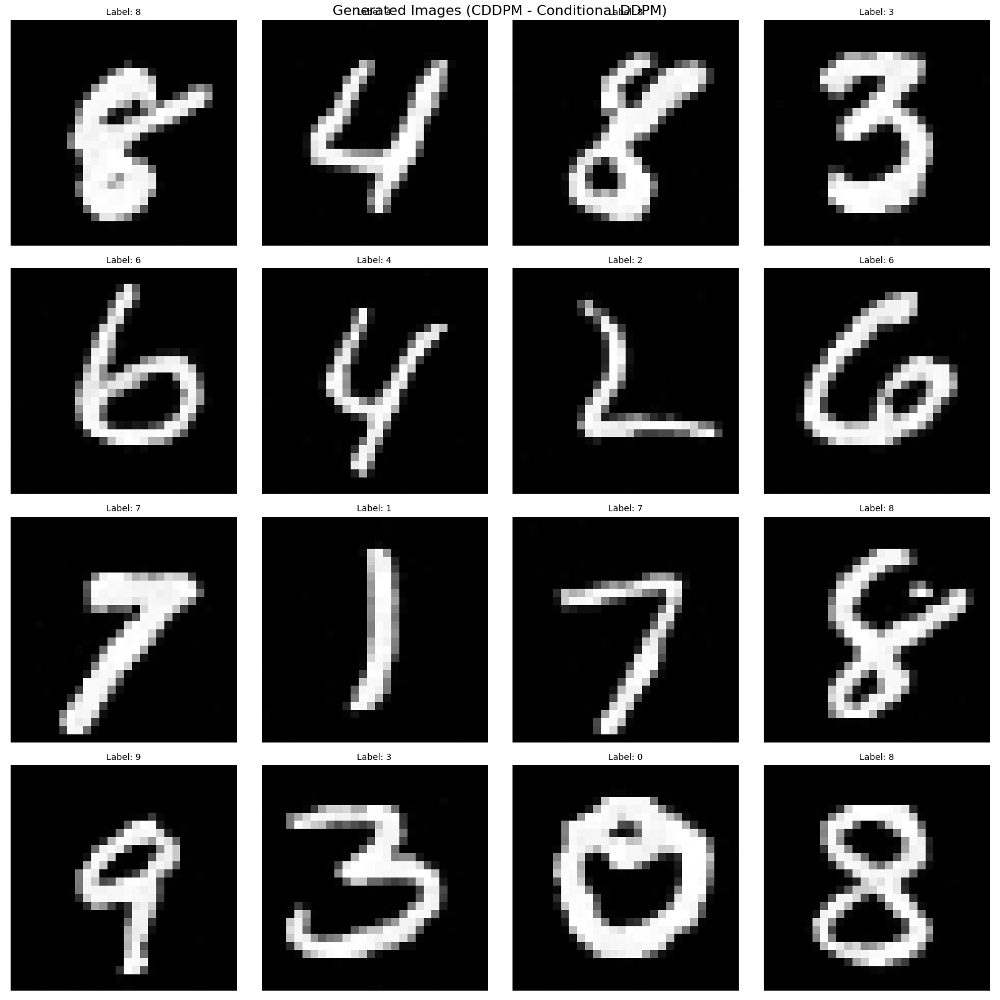

接下来进行CDDPM的实现。CDDPM在DDPM的基础上引入条件变量 \(c\)，实现可控的条件生成。
图1 CDDPM的完整架构图:条件 \(c\) 注入到去噪网络 \(\epsilon_\theta(x_t, t, c)\)
根据理论篇的内容，CDDPM的损失函数可以简化为预测噪声的均方误差:
\[\mathcal{L}_{CDDPM} = \mathbb{E}_{t, x_0, \epsilon, c} \left[ \|\epsilon - \epsilon_\theta(x_t, t, c)\|^2 \right]\]
其中:
关键变化:
与DDPM相比，CDDPM的损失函数只有一处关键变化: - 去噪网络:\(\epsilon_\theta(x_t, t, c)\) - 去噪网络依赖于条件 \(c\)
训练过程:
条件变量 \(c\) 需要编码成数值向量才能输入神经网络。在CDDPM中，我们使用Embedding编码方式:
Embedding编码: - 使用可学习的嵌入层将类别索引映射为低维向量 - 例如:类别3 → 可学习的N维向量（默认与时间嵌入维度相同） - 优点:维度可自定义，通常比one-hot更紧凑；可以学习到类别之间的语义关系
在实现中，条件编码直接集成在U-Net网络中，通过 nn.Embedding 层实现:
# 在 UNetCond 中
if num_labels is not None:
self.label_emb = nn.Embedding(num_labels, time_embed_dim)
else:
self.label_emb = NoneCDDPM使用位置编码（Positional Encoding）将时间步 \(t\) 编码为向量:
import math
import torch
from torch import nn
def _pos_encoding(time_idx, output_dim, device='cpu'):
"""位置编码的单个时间步实现"""
t, D = time_idx, output_dim
v = torch.zeros(D, device=device)
i = torch.arange(0, D, device=device)
div_term = torch.exp(i / D * math.log(10000))
v[0::2] = torch.sin(t / div_term[0::2])
v[1::2] = torch.cos(t / div_term[1::2])
return v
def pos_encoding(timesteps, output_dim, device='cpu'):
"""批量位置编码"""
batch_size = len(timesteps)
device = timesteps.device
v = torch.zeros(batch_size, output_dim, device=device)
for i in range(batch_size):
v[i] = _pos_encoding(timesteps[i], output_dim, device)
return v位置编码公式: \[PE_{(pos, 2i)} = \sin\left(\frac{pos}{10000^{2i/d_{model}}}\right)\] \[PE_{(pos, 2i+1)} = \cos\left(\frac{pos}{10000^{2i/d_{model}}}\right)\]
其中 \(pos\) 是时间步，\(i\) 是维度索引，\(d_{model}\) 是嵌入维度。
根据理论篇的分析，条件 \(c\) 通过与时间嵌入相加的方式注入到网络中:
def forward(self, x, timesteps, labels=None):
v = pos_encoding(timesteps, self.time_embed_dim, x.device)
# 如果有标签，将标签嵌入加到时间嵌入中
if labels is not None and self.label_emb is not None:
v = v + self.label_emb(labels) # 条件嵌入与时间嵌入相加
# ... 后续处理关键点: - 条件嵌入 \(emb(c)\) 与时间嵌入 \(emb(t)\) 相加:\(v = emb(t) + emb(c)\) - 然后 \(v\) 通过MLP后加到特征图 - 这是最常用和高效的条件注入方式
每个卷积块接收时间-条件嵌入 \(v\)，并将其注入到特征图中:
class ConvBlock(nn.Module):
"""带时间嵌入的卷积块"""
def __init__(self, in_ch, out_ch, time_embed_dim):
super().__init__()
self.convs = nn.Sequential(
nn.Conv2d(in_ch, out_ch, 3, padding=1),
nn.BatchNorm2d(out_ch),
nn.ReLU(),
nn.Conv2d(out_ch, out_ch, 3, padding=1),
nn.BatchNorm2d(out_ch),
nn.ReLU()
)
self.mlp = nn.Sequential(
nn.Linear(time_embed_dim, in_ch),
nn.ReLU(),
nn.Linear(in_ch, in_ch)
)
def forward(self, x, v):
N, C, _, _ = x.shape
v = self.mlp(v) # MLP处理时间-条件嵌入
v = v.view(N, C, 1, 1) # 广播到空间维度
y = self.convs(x + v) # 加到特征图
return y计算流程: 1. 时间-条件嵌入 \(v\) 通过MLP处理 2. 将 \(v\) 广播到特征图的空间维度 \((N, C, 1, 1)\) 3. 将处理后的嵌入加到输入特征图 \(x\) 上 4. 通过卷积层处理
完整的条件U-Net架构:
class UNetCond(nn.Module):
"""条件 U-Net 架构用于预测噪声，支持标签条件"""
def __init__(self, in_ch=1, time_embed_dim=100, num_labels=None):
super().__init__()
self.time_embed_dim = time_embed_dim
# U-Net的编码器-解码器结构
self.down1 = ConvBlock(in_ch, 64, time_embed_dim)
self.down2 = ConvBlock(64, 128, time_embed_dim)
self.bot1 = ConvBlock(128, 256, time_embed_dim)
self.up2 = ConvBlock(128 + 256, 128, time_embed_dim)
self.up1 = ConvBlock(128 + 64, 64, time_embed_dim)
self.out = nn.Conv2d(64, in_ch, 1)
self.maxpool = nn.MaxPool2d(2)
self.upsample = nn.Upsample(scale_factor=2, mode='bilinear')
# 标签嵌入层（用于条件生成）
if num_labels is not None:
self.label_emb = nn.Embedding(num_labels, time_embed_dim)
else:
self.label_emb = None
def forward(self, x, timesteps, labels=None):
# 1. 时间嵌入
v = pos_encoding(timesteps, self.time_embed_dim, x.device)
# 2. 条件注入:将标签嵌入加到时间嵌入中
if labels is not None and self.label_emb is not None:
v = v + self.label_emb(labels)
# 3. U-Net编码路径
x1 = self.down1(x, v)
x = self.maxpool(x1)
x2 = self.down2(x, v)
x = self.maxpool(x2)
# 4. 瓶颈层
x = self.bot1(x, v)
# 5. U-Net解码路径
x = self.upsample(x)
x = torch.cat([x, x2], dim=1) # 跳跃连接
x = self.up2(x, v)
x = self.upsample(x)
x = torch.cat([x, x1], dim=1) # 跳跃连接
x = self.up1(x, v)
# 6. 输出层
x = self.out(x)
return x架构特点: - 编码器-解码器结构:使用U-Net架构，保留空间信息 - 跳跃连接:编码器和解码器之间的跳跃连接，帮助恢复细节 - 条件注入:在每个卷积块中，条件信息通过时间嵌入注入
前向扩散过程与DDPM相同，不依赖于条件:
class Diffuser:
"""扩散过程管理器"""
def __init__(self, num_timesteps=1000, beta_start=0.0001, beta_end=0.02, device='cpu'):
self.num_timesteps = num_timesteps
self.device = device
self.betas = torch.linspace(beta_start, beta_end, num_timesteps, device=device)
self.alphas = 1 - self.betas
self.alpha_bars = torch.cumprod(self.alphas, dim=0)
def diffusion(self, x_0, t):
"""前向扩散过程:向图像添加噪声"""
T = self.num_timesteps
assert (t >= 1).all() and (t <= T).all()
t_idx = t - 1 # alpha_bars[0] is for t=1
alpha_bar = self.alpha_bars[t_idx] # (N,)
N = alpha_bar.size(0)
alpha_bar = alpha_bar.view(N, 1, 1, 1) # (N, 1, 1, 1)
noise = torch.randn_like(x_0, device=self.device)
x_t = torch.sqrt(alpha_bar) * x_0 + torch.sqrt(1 - alpha_bar) * noise
return x_t, noise关键点: - 前向过程 \(q(x_t|x_0)\) 不依赖于条件 \(c\) - 这与理论篇的结论一致:前向过程与条件无关
反向去噪过程依赖于条件 \(c\):
def denoise(self, model, x, t, labels=None):
"""反向去噪过程:使用条件去噪网络"""
T = self.num_timesteps
assert (t >= 1).all() and (t <= T).all()
t_idx = t - 1
alpha = self.alphas[t_idx]
alpha_bar = self.alpha_bars[t_idx]
alpha_bar_prev = self.alpha_bars[t_idx-1]
N = alpha.size(0)
alpha = alpha.view(N, 1, 1, 1)
alpha_bar = alpha_bar.view(N, 1, 1, 1)
alpha_bar_prev = alpha_bar_prev.view(N, 1, 1, 1)
model.eval()
with torch.no_grad():
eps = model(x, t, labels) # 条件预测:epsilon_theta(x_t, t, c)
model.train()
noise = torch.randn_like(x, device=self.device)
noise[t == 1] = 0 # no noise at t=1
# 计算均值:mu_theta(x_t, t, c)
mu = (x - ((1-alpha) / torch.sqrt(1-alpha_bar)) * eps) / torch.sqrt(alpha)
# 计算标准差
std = torch.sqrt((1-alpha) * (1-alpha_bar_prev) / (1-alpha_bar))
return mu + noise * std关键公式:
均值计算: \[\mu_\theta(x_t, t, c) = \frac{1}{\sqrt{\alpha_t}} \left( x_t - \frac{\beta_t}{\sqrt{1 - \bar{\alpha}_t}} \epsilon_\theta(x_t, t, c) \right)\]
标准差计算: \[\sigma_t = \sqrt{\frac{(1-\alpha_t)(1-\bar{\alpha}_{t-1})}{1-\bar{\alpha}_t}}\]
从随机噪声生成条件样本:
def sample(self, model, x_shape, labels=None):
"""从随机噪声生成图像（条件生成）
Args:
model: UNet 模型
x_shape: 生成图像的形状 (batch_size, channels, height, width)
labels: 条件标签
"""
batch_size = x_shape[0]
x = torch.randn(x_shape, device=self.device) # 从标准正态分布采样
# 如果未提供标签，随机生成
if labels is None:
labels = torch.randint(0, 10, (batch_size,), device=self.device)
# 迭代去噪:从 t=T 到 t=1
for i in tqdm(range(self.num_timesteps, 0, -1), desc='Sampling'):
t = torch.tensor([i] * batch_size, device=self.device, dtype=torch.long)
x = self.denoise(model, x, t, labels) # 条件去噪
images = [self.reverse_to_img(x[i]) for i in range(batch_size)]
return images, labels生成算法:
CDDPM的损失函数是预测噪声的均方误差:
# 训练循环中的损失计算
for images, labels in train_loader:
optimizer.zero_grad()
x = images.to(device)
labels = labels.to(device)
# 随机采样时间步
t = torch.randint(1, num_timesteps+1, (len(x),), device=device)
# 前向扩散:添加噪声
x_noisy, noise = diffuser.diffusion(x, t)
# 条件预测:epsilon_theta(x_t, t, c)
noise_pred = model(x_noisy, t, labels)
# 损失:MSE(noise, noise_pred)
loss = F.mse_loss(noise, noise_pred)
loss.backward()
optimizer.step()损失函数: \[\mathcal{L}_{CDDPM} = \mathbb{E}_{t, x_0, \epsilon, c} \left[ \|\epsilon - \epsilon_\theta(x_t, t, c)\|^2 \right]\]
代码中的 infer 部分展示了CDDPM的条件生成能力:
# 模型推理2 - 生成新图像（带条件标签）
if infer:
model.eval()
print('\n开始生成图像...')
# 生成图像（条件生成）
x_shape = (sample_size, in_channel, img_size, img_size)
# 可以指定特定标签，例如生成数字0-9各一张
# labels = torch.tensor([i for i in range(10)], device=device)
labels = None # None表示随机生成标签
images, labels = diffuser.sample(
model, x_shape, labels=labels
)
# 显示生成的图像
show_images(images, labels)
图2 CDDPM的条件生成能力:基于条件标签生成对应的图像
关键优势: - 可控生成:通过指定条件 \(c\)（如数字标签），可以生成特定类别的图像 - 条件引导:条件信息引导去噪过程，使得生成的内容符合指定条件 - 结果:生成的图像不仅是有意义的，而且是符合指定条件的
| 特性 | DDPM | CDDPM |
|---|---|---|
| 生成方式 | 无条件生成，完全随机 | 条件生成，可控 |
| 去噪网络 | \(\epsilon_\theta(x_t, t)\) | \(\epsilon_\theta(x_t, t, c)\) |
| 前向过程 | \(q(x_t\|x_{t-1})\) | \(q(x_t\|x_{t-1})\)（不变） |
| 反向过程 | \(p_\theta(x_{t-1}\|x_t)\) | \(p_\theta(x_{t-1}\|x_t, c)\) |
| 条件编码 | 无 | Embedding编码 |
| 条件注入 | 无 | 与时间嵌入相加 |
| 生成控制 | 无法控制生成内容 | 可通过条件 \(c\) 控制生成类别 |
| 应用场景 | 随机生成、数据增强 | 条件生成、可控创作、图像编辑 |
核心思想:CDDPM通过在去噪过程中引入条件信息，实现了从“无条件随机生成”到“条件可控生成”的跨越。这使得CDDPM不仅可以生成新数据，还可以根据用户指定的条件生成特定类别的数据。
训练步骤:
训练代码示例:
for epoch in range(epochs):
for images, labels in train_loader:
optimizer.zero_grad()
x = images.to(device)
labels = labels.to(device)
# 随机采样时间步
t = torch.randint(1, num_timesteps+1, (len(x),), device=device)
# 前向扩散
x_noisy, noise = diffuser.diffusion(x, t)
# 条件预测
noise_pred = model(x_noisy, t, labels)
# 损失计算
loss = F.mse_loss(noise, noise_pred)
# 反向传播
loss.backward()
optimizer.step()生成步骤:
推理代码示例:
model.eval()
with torch.no_grad():
# 初始化噪声
x = torch.randn(x_shape, device=device)
# 指定条件（或随机生成）
labels = torch.tensor([0, 1, 2, 3, 4, 5, 6, 7, 8, 9], device=device)
# 迭代去噪
for i in range(num_timesteps, 0, -1):
t = torch.tensor([i] * batch_size, device=device, dtype=torch.long)
x = diffuser.denoise(model, x, t, labels)
# 转换为图像
images = [diffuser.reverse_to_img(x[i]) for i in range(batch_size)]条件去噪扩散概率模型（CDDPM） 通过以下关键创新实现了可控生成:
关键设计选择:
CDDPM的成功证明了条件信息对于可控生成的重要性，为后续的条件生成模型（如Classifier-Free Guidance、ControlNet等）奠定了基础。
与CVAE的对比:
| 特性 | CVAE | CDDPM |
|---|---|---|
| 生成过程 | 单步解码 | 多步迭代去噪 |
| 条件注入位置 | 编码器和解码器 | 仅去噪网络 |
| 生成质量 | 较好 | 优秀 |
| 训练稳定性 | 需要平衡KL项 | 训练稳定 |
| 计算成本 | 低 | 高（需要多步迭代） |
CDDPM通过多步迭代去噪过程，在保持训练稳定性的同时，实现了高质量的条件生成，是生成模型领域的重要进展。